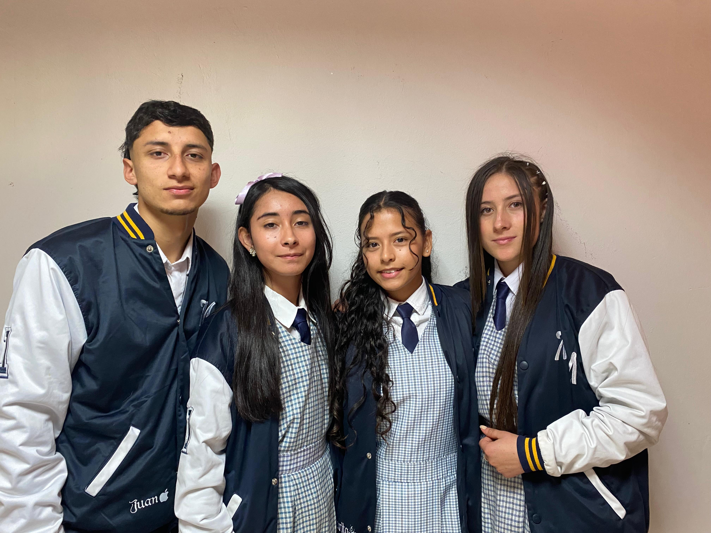

REGRESAR

Somos una base de datos en la cual se encuentran registrados todos los libros presentes en la biblioteca de la primaria, organizados por categorías creadas pensando en su sencilla accesibilidad. Además contamos con algunos de estos libros en formato PDF para que así todos puedan acceder a la lectura. Lo que buscamos también es que con nosotros se implemente el uso de las TIC en la institución María Medina, más específicamente en la sede primaria ya antes mencionada además mejorar los procesos de escritura en la misma.